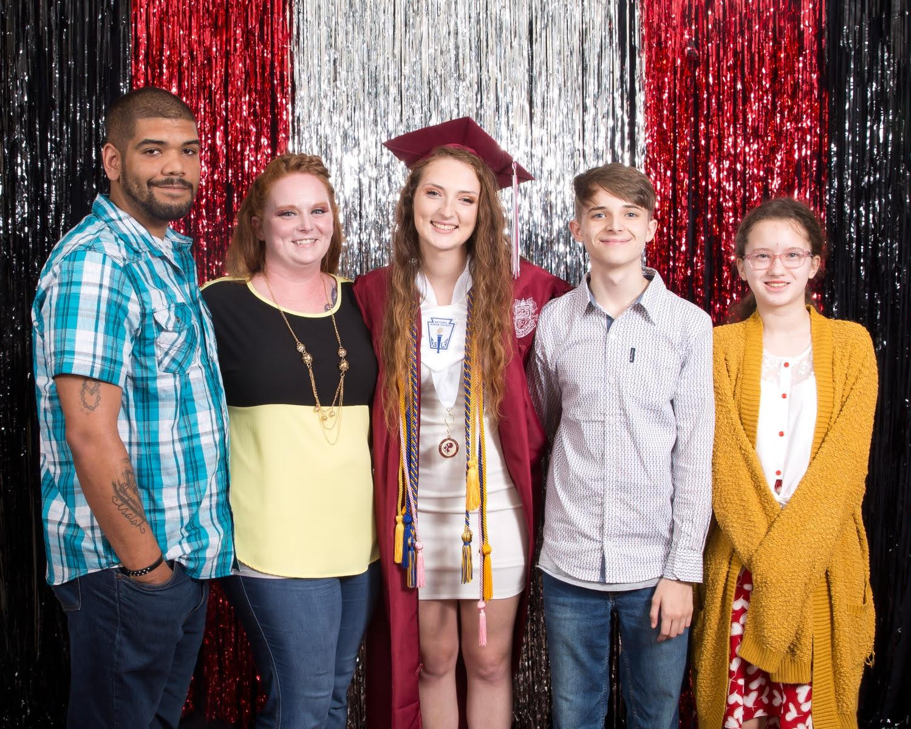

Mom, you are the heart of our family, and our love for you goes beyond words. Today, we celebrate you — your kindness, your strength, and the love you’ve poured into our lives.
Thank you for every sacrifice, every hug, every laugh, and every lesson. You are truly the center of everything we hold dear.
To honor the memories we've shared, I’ve created this website — a place where you can click through snapshots of our journey together as we all grow.
Happy Mother’s Day! You mean the world to us.
"A mother's love is the fuel that enables a normal human being to do the impossible." – Marion C. Garretty
I felt like this was the perfect photo to add here because it shows just how strong of a woman you are. From the moment you learned that your life would forever change, you've been making sacrifices to give your children a better life. (And I think you’ve done pretty darn well so far.)
At 21, I now see those sacrifices in a new light. I understand the weight you carried — the ache of leaving, the strength it took to keep going, and the courage to return, knowing that every sacrifice was for something bigger.
You fought for your dreams, for our future, for us.
My high school graduation, a milestone I worked so hard for. As the firstborn, I’ve always felt the weight of expectation, but also the warmth of knowing I’m paving the way for the rest of the family. This photo isn’t just a celebration of my achievement, but a reflection of all the love, sacrifice, and encouragement you've given me.